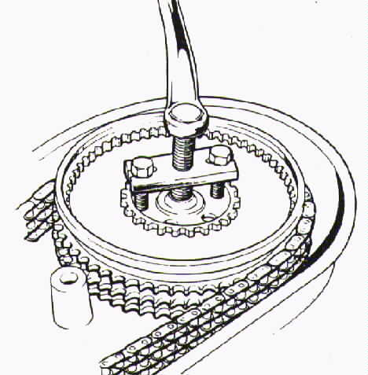

Assemble the puller central bolt and long bolts. With alternator removed, position puller so that large central bolt is in line with crankshaft end. Screw long baits into threaded holes in sprocket as deeply as possible. These bolts should be screwed in an equal amount so that the assembly is not cocked to one side. Tighten the center bolt until considerable resistance is hit. Tap the sprocket smartly with a hammer and long drift; if this fails to free the sprocket. tighten the center bolt and tap again. When the sprocket pulls free of the taper, the clutch can be slid off the transmission shaft and the primary chain/sprocket assembly removed.

Assemble the puller using the short bolts supplied. Screw these bolts into the threaded holes in the clutch center an equal amount and tighten the central bolt. Since the clutch is fitted to a splined parallel bore (no taper), little effort should be needed to withdraw it.

Assemble puller with the short bolts supplied and the two puller claws. Fit with a claw on either side of the sprocket and tighten central bolt to free sprocket from camshaft.

Norton Factory Tools….Accessories, Tools
This page was written and designed by F. H. Eaton
& Associates if you have any questions or comments please
contact us at info@fheaton.com